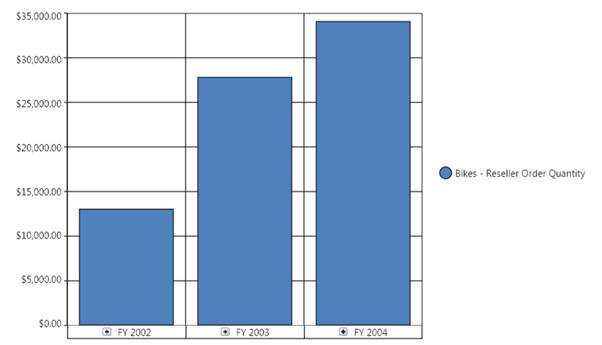
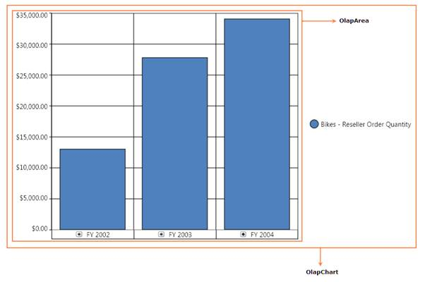
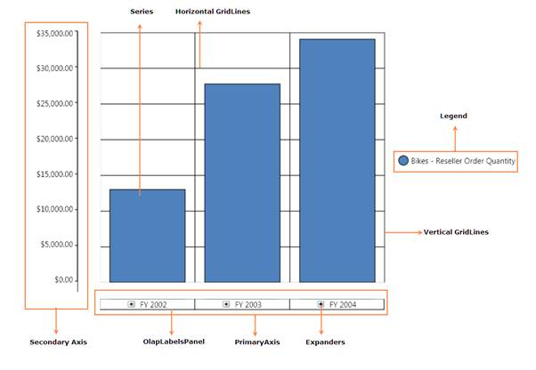
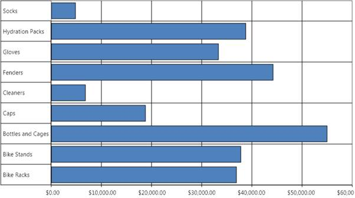
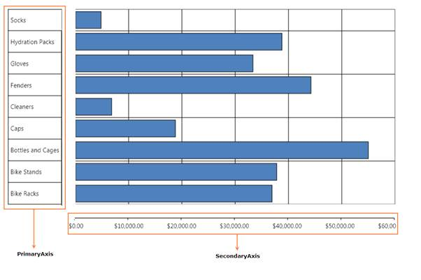
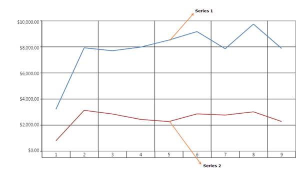
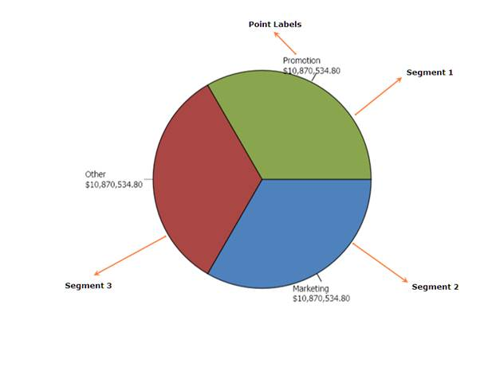
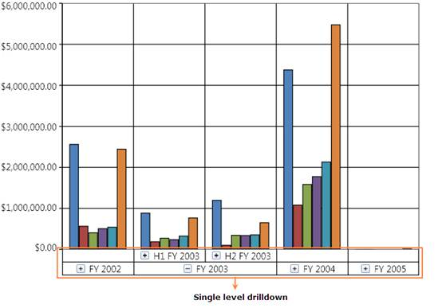
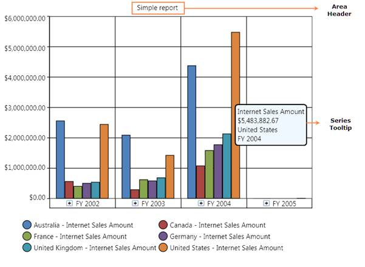

The OlapChart WPF contains the following elements:
1. OlapArea – Represents the ChartArea, which contains the ChartSeries and the ChartAxes.
2. ChartSeries – Representation of points in a series according to the selected chart type.
3. ChartAxes – Rectangular co-ordinate system in which the points are plotted. There are two types of axis available namely, PrimaryAxis and SecondaryAxis.
4. GridLines – Grid lines are the lines, which help to visualize the series separation or the series value comparison. There are two types of grid lines available in chart namely, Horizontal GridLines and Vertical GridLines.
5. Legend – The Legend displays an entry for each data series added to the Chart control. The Chart Legend is positioned within the Chart control (but outside the ChartArea), by default. However, if the Chart Legend is set to the Floating mode, the Chart Legend can be positioned anywhere inside the Chart control.
6. ChartHeader – Displays the title for the OlapChart.
7. Segments – If a series is divided into small portions, then those portions are known as segments. The segments are found in Stacking bar, Stacking100 bar, Pie, Stacking column, and Stacking100 column type of charts.
8. AdornmentInfo – AdornmentInfo contains the information for styling and customizing the chart series and axis.
9. Expanders – The small ‘+’ sign in the OlapLabelPanel is known as expander. It is used to drill up/down the multiple levels of data rendered in the OlapChart.
10. Tooltip – The small information pop-up is used to represent the key information about a series or a data point.
The following illustrations describe the various parts of an OlapChart:

Figure 18: Simple OlapChart

Figure 19: OlapChart and OlapArea portions

Figure 20: Various parts of an OlapChart

Figure 21: Simple Bar OlapChart

Figure 22: Primary axis and secondary axis in a Bar type chart
 Note: In bar chart, stacking bar, and stacking100
bar charts, the vertical axis (Y-Axis) is the primary axis and the horizontal
axis (X-Axis) is the secondary axis.
Note: In bar chart, stacking bar, and stacking100
bar charts, the vertical axis (Y-Axis) is the primary axis and the horizontal
axis (X-Axis) is the secondary axis.

Figure 23: Series in a Line chart

Figure 24: Segments in a pie chart
Note: Pie chart renders in a
single series with many segments.

Figure 25: An OlapChart with single level drill down

Figure 26: An OlapChart with Chart area header and Series tooltip